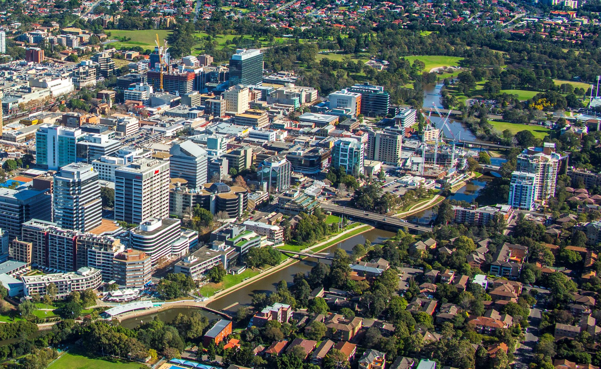
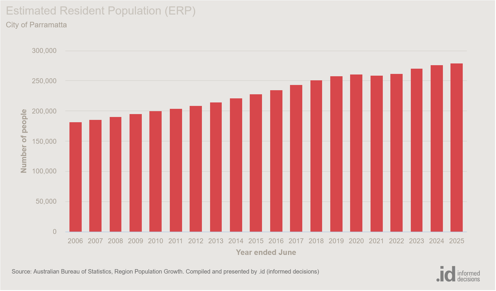

The Benefits of Visiting Parramatta
Whenever our team heads out for a bite to eat, Parramatta is our first option. Parramatta has been recognised for its rich history, vibrant dining culture and beautiful scenery. It is such a hassle narrowing down our options when it comes to finding a restaurant, as Parramatta is a diverse community with a broad spectrum of delicious cuisines.
Parramatta's rich dining experience is not only what the suburb is known for. Parramatta is celebrated for its broad range of shopping options, multitude of dining experiences, local sports teams and its growing economy. This brings a stampede of visitors to Parramatta, further enriching the local economy. According to the City of Parramatta “Visitors contribute about $3.3 billion a year to Parramatta - around 6% of the whole local economy”.
I find it interesting how Parramatta has an incomprehensible number of local businesses to choose from but our team still has trouble deciding on where to dine. Church Street in Parramatta is renowned for its multitude of restaurants. We frequently visit local businesses in Church Street to satisfy our snack attacks.
In my free time on the weekend I frequent Westfield Parramatta. Westfield Parramatta encompasses numerous stores that cater to anything anyone could possibly want. This benefits the residents of Parramatta as it makes it possible for them to access one mall where they are met with a plethora of shopping centres that can make it possible for them to find what they are looking for in one area. Isn't that just crazy!

From this graph we can deduce that Parramatta's steady increase in resident population is indicative of the need for job opportunities and the need for resources higher. This has led to a growing number of small/local businesses in Parramatta. Local businesses contribute to more employment opportunities, further benefiting the economy.
Meeting new people whenever I visit a local business in Parramatta makes my day. Parramatta has a community that is always friendly and up for a nice chat.
Participating in Parramatta's community events with friends gives us a fun way to socialise. When you visit make sure to keep an eye out for any community events that may take place. This can give you a chance to discover Parramatta's diverse community and make new friends.
In a nutshell, Parramatta is a community driven suburb with residents from diverse backgrounds who come together to contribute to the community. It is home to a plethora of local businesses and community events. These are my experiences with Parramatta. Don’t hesitate to share some of your own!